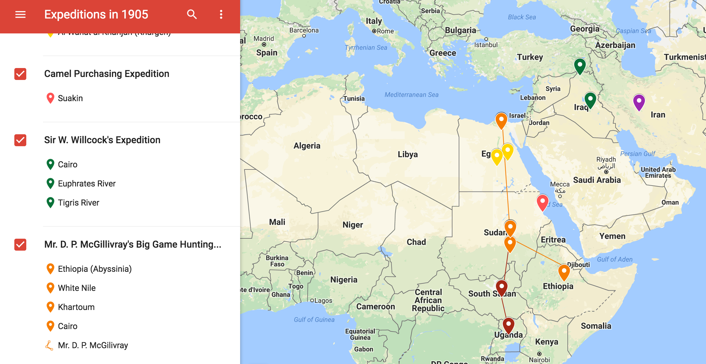

For an active version of the map use this link.
When I first began looking through the newspaper I knew I was interested in the people. By this, I mean that I was curious about individual lives and stories. The people mentioned in The Egyptian Gazette lived radically different lives than we do today, and I was curious about their experiences. The social workings of the society were particularly interesting to me. So, I began to think about the class structure and how this came through in the newspaper. One other interesting aspect of the paper to me was how little information was known sometimes. For example, in one issue a princess went missing, and that was the end of the story. They had one guess as to why she possibly might have left and nothing more. The idea of missing persons and how this problem was handled in Alexandria in 1905 was fascinating as well. So, I mashed the two thoughts together and decided to look at how this was related to class structure (how much was written about the missing person, what information was given). Unfortunately, this serial question fell through when I started to look through everyone else’s weeks. There was little to no information on my topic. The occurrences I had found in my week were evidently not a common element.
The fact that my serial question was not proving to be very fruitful was somewhat panic-inducing at first. However, there was no time to waste, so I began exploring The Egyptian Gazette for something that would strike up a new interest. I continued to keep a focus on individuals and their stories, but this time I also searched for recurring themes so I would not end up in a similar pickle as the one I found myself in before. That’s when it dawned on me…exploring! There were many mentions of expeditions and explorers throughout the newspaper. As I started to read through these accounts, I developed a new serial question. I would look at the individual journeys to discover the reasons for traveling, where they were travelling, and if the journey was successful based on their initial purpose. Once I had analyzed each expedition, I could map them out and come up with some conclusions about expeditions in the year 1905 that were somehow relevant to Alexandria, Egypt. I hoped that this would provide insight into common destinations as well as common curiosities, concerns, or problems that led to a need for such explorations. Also, what kind of people were going off on these expeditions? How much of a risk was such an endeavor for these explorers? How far would they typically go? What limitations were there? There was an endless supply of questions that could have been asked about these expeditions. By the end of my own exploration on this topic, I hoped to have a grasp on the who, what, where, and why for expeditions in the year of 1905.
The first (and fairly obvious) bit of information that I gathered was that Cairo and Khartoum were the most common start and end points for the expeditions. Another interesting element to this discovery was that only the private expeditions seemed to either start or end here. From the start, it was apparent that some expeditions were done through large corporations, such as Corporation of Western Egypt, or governmental necessity, such as the camel purchasing expedition that was scrutinized for its appearance as a pleasure trip. Others, such as those that either began or ended in Cairo or Khartoum, involved an explorer and possibly a group to accompany him (I say “him” because there were no female leaders for these expeditions). I decided to classify expeditions such as these as “private” and the others as “official” to distinguish between the two categories that I had noticed.
In total, I tracked five private investigations and two official expeditions. For three out of the five private expeditions, game hunting was the main purpose or was at least mentioned as a goal of the explorer. There did not seem to be a favorite hunting spot among these explorers. However, it is worth noting that Mr. D. P. McGillivray seemed to be the most successful with his hunt which took place in Abyssinia (now known as Ethiopia). Count Teziersky’s hunting expedition in Mobarakeh appeared to be successful as well, despite his health challenges at the end. Interestingly, Mr. J. J. Harrison’s exploration was never mentioned in the newspaper again after the initial article stating where he was to go and why. He intended to secure an okapi in “the forest region” and end his expedition in Khartoum. Sadly, there was no further indication of whether he actually accomplished this or not. This is quite the opposite of how the Powell-Cotton expedition and McGivillivray expedition are documented throughout the newspaper. There were regular reports of these two expeditions, including reports on the health of the explorers. This leaves the J. J. Harrison expedition as somewhat of a mystery. It is difficult to say why The Egyptian Gazette would not track his progress as they did for the other explorers. The remaining two private expeditions seemed to be done in the pursuit of knowledge. One dealing with the water of the Euphrates river and the Tigris river (Sir W. Willcock), the other described as an “expedition from the Nile to the Zambesi” (Major Powell-Cotton). Both of these seemed to be successful in their endeavors, although the ultimate purpose of the Powell-Cotton expedition was not clear.
The Powell-Cotton expedition led to an interesting sub-topic in my analysis. This was the only expedition where it was explicitly stated that the explorer was traveling alone, that is, other than the natives who accompanied him. The updates on this expedition seemed to hardly think of the natives as human. They described Major Powell-Cotton as “travelling all alone” then mentioned that there were in fact “natives” accompanying him. What was even more striking was the choice of words used to describe the explorer. It was stated that the natives would follow the “kind white chief” anywhere and that “the gallant explorer’s methods [were] always those of peace and goodwill.” Clearly, there were some biased opinions included in the accounts of this expedition. This led me to consider the possibility of such bias in the accounts of the other expeditions. From the perspective of the The Egyptian Gazette they certainly sounded like valiant efforts from courageous leaders, but one must wonder how the “natives” viewed such adventures. It would be interesting to hear an account from this other perspective and see how much this resembles how The Egyptian Gazette claims that the “natives” felt about these “kind white chiefs.” Of course, this was not a question I could answer with the information available from The Egyptian Gazette itself. However, it was a point to consider when analyzing these expeditions.
The expeditions which I came to refer to as “official” were not quite as interesting to me as the private ones, being that my original interest was in individuals and their unique experiences. It is important to note though that these expeditions had much greater purposes than the private ones, meaning, that they would have a bigger effect in the long run. This is why the camel purchasing expedition became so controversial. It was meant to be an official journey with a singular purpose- purchasing camels by a coast guard administration official. However, it took the appearance of a pleasure trip in which the Director-General enjoyed a trip with his wife and friends. It was somewhat humorous seeing how camel purchasing was a task described as one “which any responsible subordinate officer could undertake.” Clearly, people got upset when the line between official expeditions and private expeditions became blurred.
It was surprising how easy it was to come up with conclusions such as this from just a few bits of information scattered throughout a newspaper here and there. Mapping it out helped tremendously to consolidate all of the information and look for trends. This is not to say that there were no challenges though. The J. J. Harrison private expedition is an example of the challenge that came from some expeditions being reported on more often than others for whatever reason. Other challenges came from somewhat vague directions such as “he planned to stay west” or “in the forest region.” In some cases, it was essentially impossible to know with certainty where these people went in between their start and end points. One final difficulty was in connecting all the pieces to the puzzle. Sometimes, an expedition not reported on for months would suddenly make a reappearance or more information would be including in later reports that helped to explain earlier points in the expedition. I did my best to create an accurate representation of the movements of the expeditions reported by The Egyptian Gazette in 1905, and the final product offered much insight. I was able to discover key differences between the two most common types of expeditions, the general reasons for expeditions, and commonalities between the private expeditions.
To find this information I used the query: //div[@type="item"][contains(., 'expedition')]. This seemed to be the term that was used the most to describe these events, but there may be others such as “excursion” that might give some results. There may also be some useful information in advertisements.